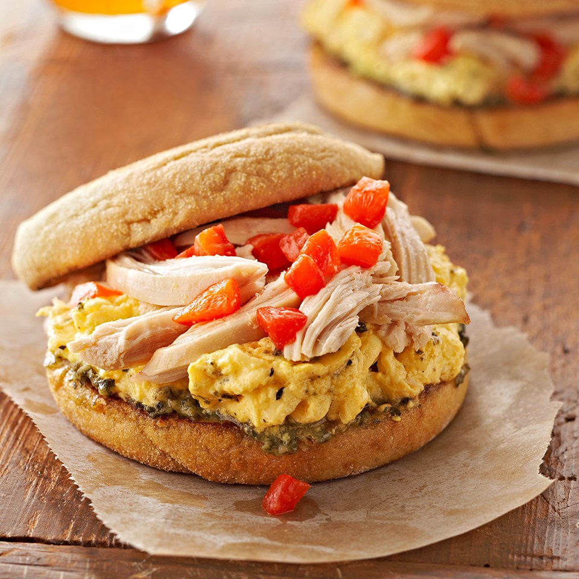

This breakfast sandwich will satisfy your hunger for hours.
It features Italian-seasoned scrambled eggs, shredded chicken breast and strips of roasted sweet
peppers atop a pesto-smeared toasted whole-grain English muffin. Prep in 25m, ready in 30m.

Ingredients
Nonstick cooking spray
1 cup refrigerated or frozen egg product or 4 eggs, lightly beaten
¼ teaspoon Italian seasoning, crushed
⅛ teaspoon salt
4 whole-grain English muffins, split and toasted
2 tablespoons refrigerated reduced-fat or regular basil pesto
4 ounces cooked chicken breast, shredded
¼ cup roasted red sweet pepper, cut in bite-sized strips
Preparation
Lightly coat a large nonstick skillet with cooking spray and heat over medium heat.
In a small bowl combine egg product, Italian seasoning and salt.
Pour in egg mixture and cook without stirring, until mixture begins to set on the bottom and around edges.
With a spatula or a large spoon, lift and fold the partially cooked egg mixture so that the uncooked portion flows underneath.
Continue cooking for 2 to 3 minutes or until egg mixture is cooked through, but is still glossy and moist.
Immediately remove from heat.
Spread cut sides of English muffins with pesto.
Top bottom halves of muffins with egg mixture, chicken, roasted red pepper and muffin tops. Serve warm.